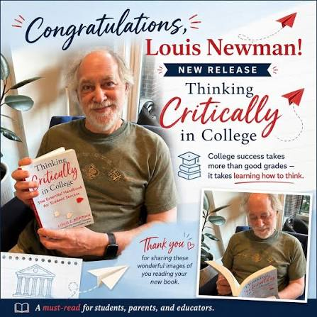

When hard work isn't translating to college success, overworked campus advisors aren't enough. Leverage 1:1 personalized guidance to overcome obstacles and regain confidence.
Most students worry about getting into college. Far fewer stop to consider how they will do college—what their goals are and how they'll navigate the challenges that often come up.
College is often harder than students expect. There are lots of challenges—academic, social, and personal.
In fact, most college students hit a moment where things aren't working as planned—maybe they're in over their head in a course, they're spiraling downward emotionally, they've lost a sense of direction or motivation, or they're doing everything "right" and still falling behind. They've talked with their academic advisor, but that person has hundreds of other advisees and little time to help.
As a parent, you don't always know who to call.
Working with an individual College Success Coach can help your student overcome obstacles, get back on track, set appropriate goals, and make sure they follow through.
So, whether your student is struggling academically, needs extra support transitioning successfully from high school to college, or would just benefit from personalized advice in making key decisions...
College Success Coaching can help.
Struggling Right Now?
Ongoing, one-on-one support built around your student's unique needs.
See how it works →Heading to College Soon?
College Launchpad™ and the Ready, Set, Think bootcamp. Get ready before you arrive.
Explore programs →The Ultimate College Success Book
The only book that explains how to do the work in your college courses, and much more.
About the book →Thoughts on college success and recent media appearances.

The Chronicle of Higher Education • Oct 14, 2024
In a recent interview, Louis discusses the shifting landscape of college readiness and why transactional advising models are failing today's students.
Blog
Many first-year students hit a wall around October. Here are three strategies to help them regain their footing.
Podcast
Listen to Louis's latest conversation on how parents can shift their focus from admission to actual academic thriving.
Blog
Talking to professors can be intimidating. A step-by-step guide on how to prepare for your next visit.